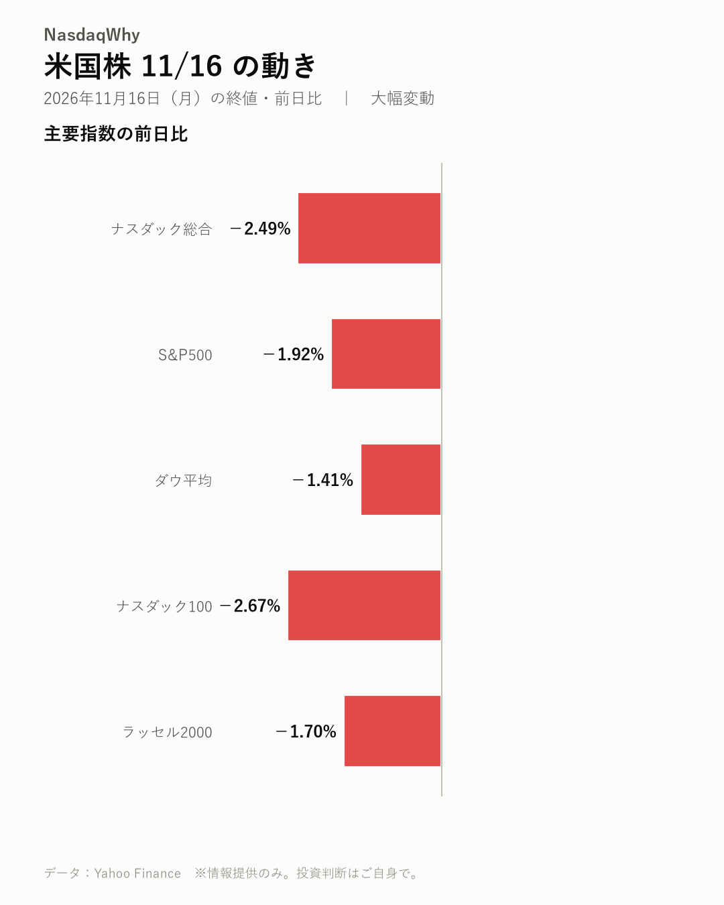
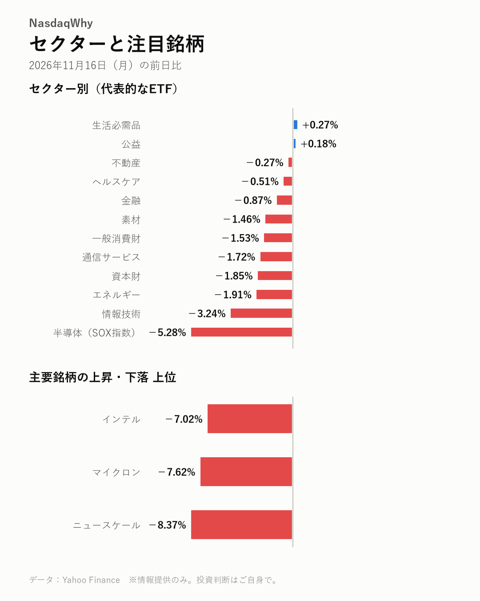

11/16の米国株：エヌビディア決算を前に、なぜ半導体株が大きく売られた？
2026年11月16日（月）の米国市場（日本時間の翌朝更新） ｜ 大幅変動
今日の疑問
エヌビディア決算を前に、なぜ半導体株が大きく売られた？
MarketWatchによると、投資家はエヌビディアの決算と、同社がAI関連企業への資金支援を縮めるかを警戒した。マイクロンはDRAM価格カルテル訴訟、インテルは株主の集団訴訟が重荷になった。売りの広がりを決めた材料はまだ分からず、次にエヌビディアの決算内容を確かめたい。

主要指数
| 名前 | 終値 | 前日比 | 騰落率 |
|---|---|---|---|
| ナスダック総合 | 24,509.76 | -626.51 | -2.49% |
| S&P500 | 7,416.59 | -145.08 | -1.92% |
| ダウ平均 | 51,608.17 | -739.38 | -1.41% |
| ナスダック100 | 27,197.15 | -746.59 | -2.67% |
| ラッセル2000 | 2,742.94 | -47.55 | -1.70% |
なぜ動いた？
- エヌビディアの決算を前に、同社がAI関連企業への資金支援を縮めるとの警戒が広がり、AI半導体株に売りが膨らんだ。（出典：MarketWatch、Coinpaper）
- DRAM価格カルテル訴訟で米判事が却下の申し立てを退け、マイクロンは審理が続く。訴訟リスクを嫌気した売りが出た。（出典：Tom's Hardware、International Business Times Australia、International Business Times Australia）
- インテルは株主から集団訴訟を起こされた。パソコン市場の逆風を小さく見せたとの訴えで、株価の重荷になった。（出典：Tom's Hardware、Yahoo Finance、Reuters）
深掘り：大きく動いた背景
半導体株が軒並み売られ、SOX指数は-5.28%と急落した。ナスダック100も-2.67%と下げ、ハイテク株中心の売りが相場全体を押し下げた。ダウ平均は-1.41%だった。 背景にあるのはエヌビディアの決算への警戒だ。MarketWatchによると、投資家は同社がAI関連企業への資金支援を縮めるかどうかを気にしている。AI投資の流れが細れば、半導体の需要にも響くとの見方がある。SK hynixやTSMCも下げ、売りは海外の半導体株にも及んだ。 個別の悪材料も重なった。マイクロンなどメモリー大手に対するDRAM価格カルテル訴訟で、米国の判事が却下の申し立てを退けた。インテルには、パソコン市場の逆風を小さく見せたとして株主が集団訴訟を起こした。 強気の見方も残る。24/7 Wall St.は、DRAM価格の上昇がマイクロンの追い風になり得ると論じた。TrendForceによると、SK hynixは次世代HBMの増産に向けた装置の発注を計画している。 まだ分からないのは、エヌビディアが投資の姿勢を本当に変えるのかだ。次に同社の決算内容と、訴訟の審理の進み方を確かめたい。
セクター
半導体（SOX指数）は-5.28%、情報技術は-3.24%と下げを主導した。ほぼ全業種が下落するなか、生活必需品は+0.27%、公益は+0.18%と小幅に上げた。
- 騰落率の高い順：生活必需品 +0.27%、公益 +0.18%、不動産 -0.27%
- 騰落率の低い順：半導体（SOX指数） -5.28%、情報技術 -3.24%、エネルギー -1.91%

注目銘柄
マイクロンは-7.62%、インテルは-7.02%と、訴訟を嫌気して急落した。AMDは-5.58%、エヌビディアは-4.12%。ニュースケールは-8.37%と安値を更新したが、明確な材料は見当たらない。
- 下落：ニュースケール（SMR）-8.37%、マイクロン（MU）-7.62%、インテル（INTC）-7.02%
半導体トピック
- マイクロンが台湾のHBM新工場の計画を一時止めたとの報道が出た。（shattered.io）
- DRAM価格カルテル訴訟で、メモリー大手への審理が続くことになった。（Tom's Hardware、TrendForce）
- SK hynixが次世代HBMの増産に向け、新たな装置の発注を計画している。（TrendForce、XenoSpectrum）
関連市場
| 名前 | 終値 | 前日比 | 騰落率 |
|---|---|---|---|
| 米10年債利回り | 5.121% | -0.033pt | ― |
| 金先物 | 3,853.80 | -32.50 | -0.84% |
| 原油先物(WTI) | 85.36 | -3.20 | -3.61% |
| ビットコイン | 65,188.82 | -3,060.45 | -4.48% |
※取得できず：ドル円
米10年債利回りは5.121%に低下した。原油先物(WTI)は-3.61%、金先物は-0.84%。ビットコインは-4.48%と売られた。ドル円は取得できなかった。
今後の注目
- エヌビディアの決算内容と、AI関連企業への資金支援の方針（MarketWatch）
- マイクロンなどメモリー大手に対するDRAM価格カルテル訴訟の審理（Tom's Hardware）
- インテルに対する株主の集団訴訟の行方（Tom's Hardware）
- 12/9（水） FOMC（米連邦公開市場委員会）の金融政策発表（公式発表）
出典（見出し）
- MarketWatch：Micron, AMD and other AI stocks fall as the chip sector’s selloff intensifies（記事）
- Coinpaper：AI Chip Stocks Crash: SK Hynix Falls 8%, TSMC Drops 6% Ahead of Nvidia Earnings（記事）
- Tom's Hardware：Judge denies motion to dismiss DRAM price-fixing lawsuit against Micron, Samsung, and SK hynix, finds evidence of DRAM collusion plausible after 500% price surge — says chipmakers acted like ‘hawks flying in formation（記事）
- International Business Times Australia：Micron Stock Sinks Below $740 as AI Chip Selloff, DRAM Price-Fixing Lawsuit Hammer Memory Giant on Monday（記事）
- International Business Times Australia：SK Hynix ADR Tumbles 5.5% as Nvidia Turmoil and DRAM Price-Fixing Lawsuit Hit Korean Memory Chip Giant（記事）
- Tom's Hardware：Intel sued by shareholders for misleading investors after stock plunges 29% — class action claims the company downplayed the severity of PC market headwinds（記事）
- Yahoo Finance：Intel stock falls after investors file class action lawsuit against the company（記事）
- Reuters：Intel sued by shareholders following 29% stock plunge（記事）
- shattered.io：Micron Pauses $4.5B Taiwan HBM Plant, Report Says（記事）
- TrendForce：[News] U.S. Judge Rejects Samsung, SK hynix, Micron’s DRAM Price-Fixing Dismissal Bid, Citing Plausible Collusion（記事）
- TrendForce：[News] SK hynix Reportedly Plans New HBM4 Equipment Orders, with P&T6 in Focus Despite NVIDIA Uncertainty（記事）
- XenoSpectrum：SK hynix Plans HBM4 Expansion With New Equipment in 2027, but Supply Tightness May Persist（記事）
データ：Yahoo Finance
📝 note でも読めます（図つき・まとめ）：note.com/nasdaqwhy